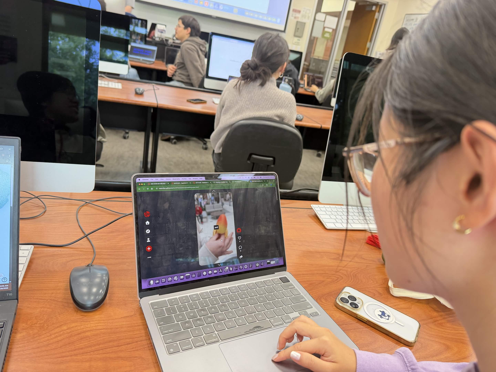
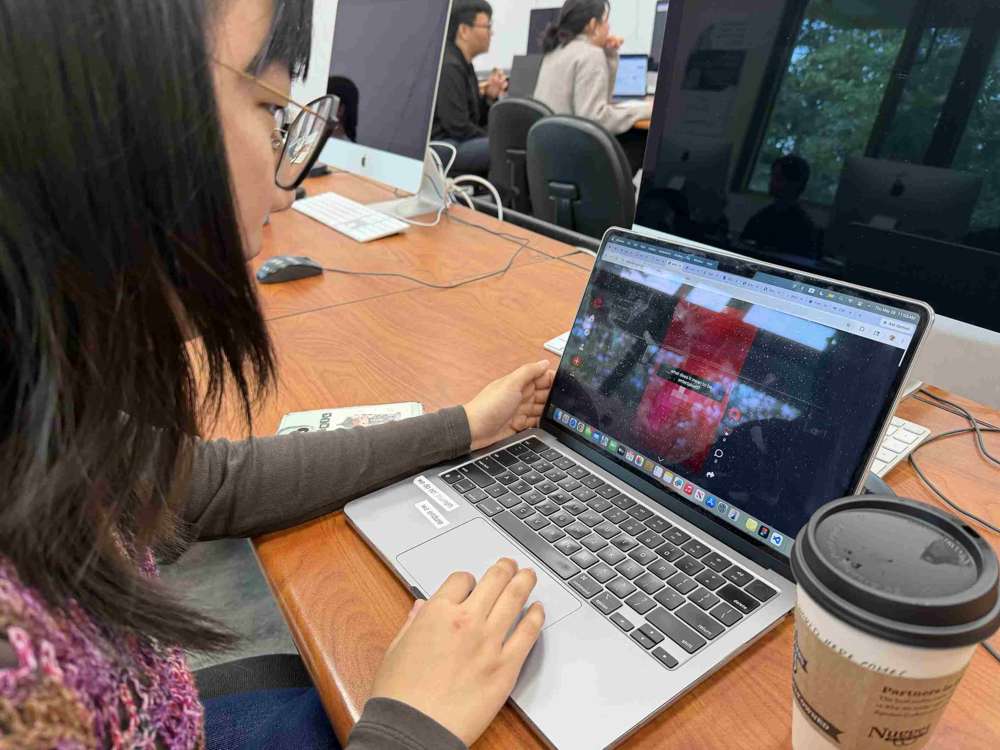
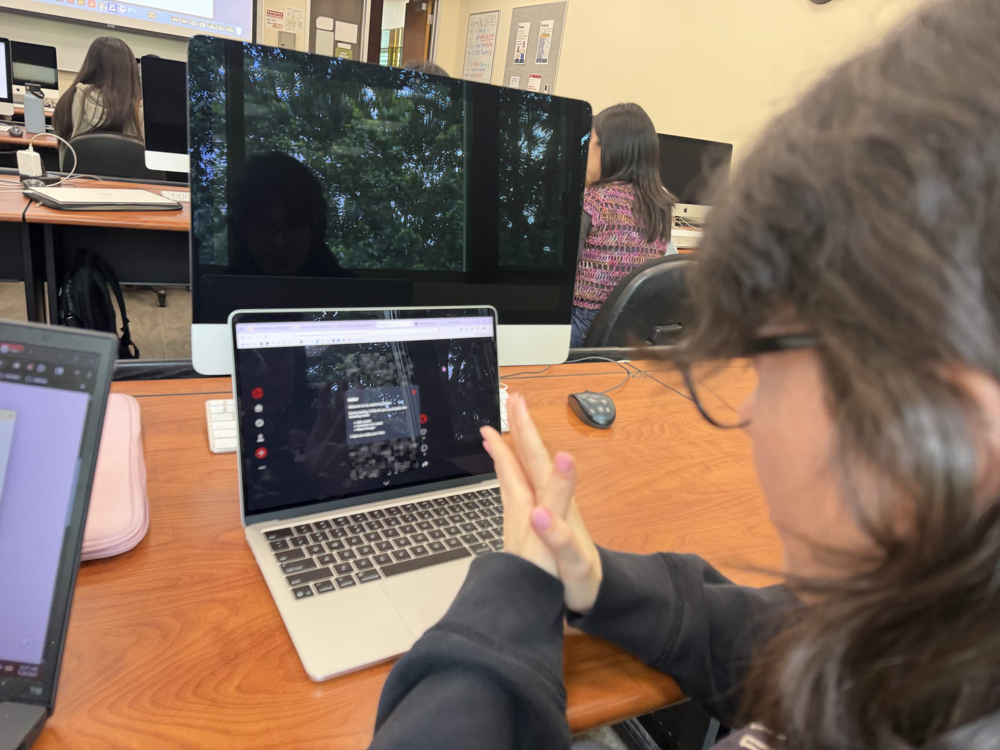

Significant observations that happened during test are:
people were caught off guard when the explore button led them back to my portal page
people wanted more engagement and animations with the text
there is potential for a user to skip on the end entirely due to
he buffersome of the narrative can be open-ended and may have a strayed interpretation
Identify aspects of your project that need to be improved.
First, I need to prioritize fixing the explore button because that's been catching people by surprise. Second, I'll focus on making the narrative more engaging both with what's written and with what's presented.
Can users figure out how to navigate/interact with your project?
Yes. Based on observations alone, they were able to read through the narrative and access the features with ease.
Does the project impact the user the way you want it to? (Does it have the right message or communicate what you want it to?)
Yes, to a degree. I believe the was an interpretation that I wasn't intending for but I was pleasantly surprised by. There was an interpretation about how art is treated on social media rather than AI stealing and regurgitating art.
What modifications need to be made to interactions, visuals or other elements of the project to make it stronger?
I'm going to focus on adjusting the explore button and making the "captions" more appealing.
Plan of how you will update your capstone project based on the feedback.
I'll get the simple fixes out of the way first. Then, I'll work on the wording of the narrative to make just reading it alone be more impactful and engaging. After that, I'll be working with animating the text to further enhance its visual appeal.


